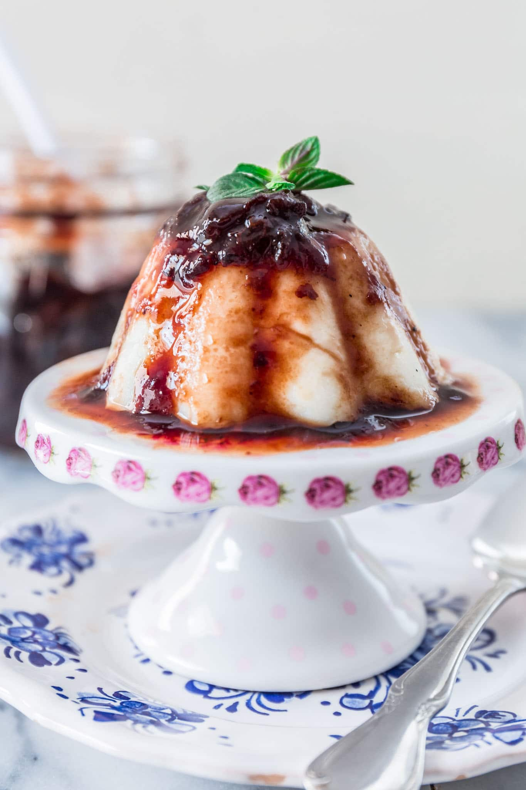

Brazilian Coconut Pudding

Silky coconut pudding, a Brazilian delight with tropical richness.
The pudding’s tropical essence makes it a perfect representation of Brazil's vibrant flavors and culinary traditions.
Coconut Custard Ingredients
- 1 1/16 pint of whole milk
- 6 tbsp of cornflour
- 1 1/16 pint of double cream
- 1/2 pint of coconut milk
- 3 1/2 oz of coconut, freshly grated or desiccated
- 6 tbsp of sugar
- 1/2 tsp vanilla paste
Prune Sauce Ingredients
- 7 1/16 oz of pitted prunes, chopped
- 4 1/16 fl oz of water
- 1 2/3 fl oz of red wine, (optional)
- sugar, to taste (I used 2 tbsp)
- 1 cinnamon stick
- 2 cloves
Step-by-Step Instructions
- Make the custard the day before serving. Pour 240g of the milk in a bowl and sift in the cornflour. Stir with a spoon until the cornflour has dissolved and set aside.
- Combine the cream, sugar, vanilla paste, coconut milk, grated coconut and the remaining milk in a medium saucepan and place over a medium heat.
Bring to the boil, stirring all the time to prevent the mixture from sticking to the bottom of the pan.
- Once boiling, gradually add the cornflour and milk mixture and continue to stir until the mixture has thickened over a low heat. Remove from the heat.
- Rinse a bundt mould with water (to prevent the custard sticking), then pour the custard into the mould. Cover with cling film, allow to cool, then refrigerate overnight.
- To make the prune sauce, heat all of the ingredients (except the whole prunes) in a medium pan and simmer for 10–15 minutes, or until the prunes have softened and formed a homogeneous syrup.
Add the whole prunes and cook for a further 5 minutes.
- Let the syrup cool completely before turning the custard out onto a serving plate and drizzling over the prune syrup. Decorate the top of the pudding with a few of the whole prunes.
Now it's serving time! I hope you enjoy this dish delicious Brazilian dessert!